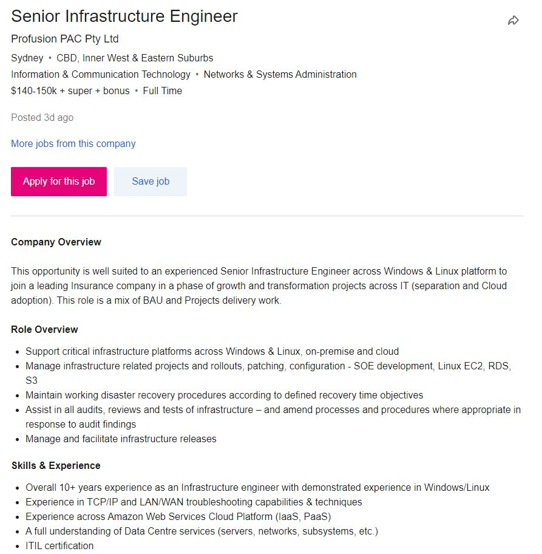

Jessica Warburton
Student ID: s3858817
Email: s3858817@student.rmit.edu.au
One interesting fact about me is that I long for the days of yore when it comes to technology. Obviously there were limitations back then and I may just be letting my nostalgia get away with me, but I love older technologies.
Interest in IT
What is your interest in IT? When did your interest in IT start?
I am interested in IT is because of the vast amount of information there is to learn. There is always something new to be learnt. I like to understand the way that things work and I like to get hands on experience with all kinds of different technologies. I'm also incredibly interested in the way that these technologies can be standardized and rolled out to large organizations.
Was there a particular event or person that sparked your interest? Outline your IT experience (if any).
My partner, Eli Priaulx, skyrocketed my interested in technology. She is a software engineer and has taught me so much in the past two years. Before meeting her I had only a limited understanding of the possibilities of technology. With her guidance I have been exposed to numerous technologies and different ways of thinking.
Why did you choose to come to RMIT?
I chose to come to RMIT to attain a degree. I felt like the structured learning environment and curriculum would be beneficial to me.
What do you expect to learn during your studies?
I am hoping to gain insights and understanding into core technologies that will make me invaluable to any team that I find myself a part of.
Test Results
Myers-Briggs Personality
Type: "The Logician" INTP-T
Traits:
Introverted - 80%
Intuitive - 73%
Thinking - 57%
Prospecting - 54%
Turbulent - 56%
Role: Analyst
Stategy: Constant Improvement
Learning style
Type: Visual Learner
Results:
Auditory - 20%
Visual - 45%
Tactile - 35%
Big five Personality
Score Percentile:
Extroversion - 37th
Emotional Stability - 34th
Agreeableness - 35th
Conscientiousness - 9th
Intellect/Imagination - 65th
Interpretation of results
What do the results of these tests mean for you?
I tend to agree with the results. They paint an accurate picture of who I am, how I learn and how my personality interacts with other people at this time. I have previously taken some of these tests and find it fascinating that my Myer Brigs personality test has changed from I find the results useful to illustrate where my strengths are and areas where they are lacking. I much prefer to work by myself than within a team and my weaknesses illustrate why that is probably a good idea for everyone involved. However, since I am being forced to, I think that I have a good overall picture of the pitfalls that might affect me.
How do you think these results may influence your behaviour in a team?
In a team setting, these results indicate that I am likely to formulate ideas quickly, but be willing to be proven wrong. I may play devil's advocate for the sake of exfiltrating ideas and logical thought and find myself confused when others become angry with me for doing so. Although I may be able to understand logic and rationality, I will likely have difficulty when it comes to understanding human nature, this could lead to all manner of conflicts when working with a team.
How should you take this into account when forming a team?
I would be best matched with others who score higher in agreeableness than myself. I will need to think more about how what I say or criticize could be interpreted by others.
My Ideal Job
Senior Infrastructure Engineer
The role requires someone to support infrastructure platforms across Windows and Linux in both a cloud environment and on-premises. You would also be responsible for managing projects, rollouts, patching and configuring of infrastructure. As well as audits, reviews and tests and maintaining disaster recovery procedures.
This position appeals to me because of the vast amount of technologies I would be responsible for working with in different environments.
The job requires 10+ years of experience as an infrastructure engineer, experience with TCP/IP and LAN/WAN troubleshooting. An understanding of Amazon Web Services and Data Centre services. As well as an ITIL certification.
I don't currently have the necessary skills and experience to apply for this job. My plan to obtain this job would be to finish my degree and apply for a job as an infrastructure engineer or work my way up from another role. From there I would need to complete the CISCO CCNA to gain a qualification working with TCP/IP and LAN/WAN networking. I would need to get ITIL certified and work within the role of a infrastructure manager for ten or more years.
Project
Overview
The idea for my project is to create virtual machines as a service for users running a thin client. This could be rolled out to enterprise but could also greatly benefit individual consumers. For enterprise it would allow organizations to easily standardized and control the environments that their employees are working in.
Motivation
- Enterprise struggles to maintain environments for their users in a manageable fashion. This solution would centralise all computers to a single location.
- A datacentre is going to have more effective power management and temperature control than a standard business environment. This can save in energy costs for a company and is also more environmentally friendly.
- People should not have to sacrifice performance for portability.
- Performant laptops are expensive and need to be replaced every few years.
- Thin clients are cheap and readily available. It is not at all expensive to replace a thin client after a few years.
- Performance can be scaled up and down to meet the specific demands of work on any given day. This greatly improves efficiency
Description
Users would use low powered and cheap machines to connect to more expensive and powerful machines. The initial cost would be the price of the thin client, an internet connection, and a subscription to the virtual machine service. Resources allocated to a specific machine could be scaled up or down as needs change. This could be controlled by an employee’s IT department or by a consumer through a login portal. This would give people the ability to only pay for what they use. Perhaps they only do GPU intensive tasks once or twice a year and the rest of their role is editing Word documents; in this case it does not make sense to have purchased a machine that is not going to be reaching its potential most of the time.
The technology already exists to make this project viable. The idea of offering this as a service does not appear to exist in the market. Some companies are already doing this themselves but there isn’t an existing service that could set this up for them and charge them for their usage. There have been attempts at doing this for gaming such as Google stadia, but one of the issues they encountered was latency. I would imagine this would also be a large factor affecting the viability of this project. However, consumers do not only use personal computers for gaming, but there are also plenty of other CPU and GPU intensive tasks that someone might want to accomplish such as video editing, data science or 3D rendering. In these use cases latency might not be as much of an issue.
Tools and technologies
The tools and technologies involved would include many servers. Whilst there already is software available such a Remote Desktop Connection, it might be beneficial to develop software in house to facilitate any sort of advanced functionality that might arise. A minimum viable thin client would also need to be sourced and tested to ensure that a certain degree of service can be delivered. We would need to develop an administration dashboard so that IT administrators can login and configured virtual machines for their users and configure billing options. The same would need to be done for the consumer side of things. We would also need a way to monitor resource usage to know whether we were running low on things like CPU cores, RAM and disk space.
Skills required
To pull this project off we would need a team of specialists. A security specialist would be needed to ensure that all the virtual machines, which would hold sensitive information, were as secure as possible. We would need network engineers to ensure that all the networking is running smoothly and reducing as much latency as possible. We would also need infrastructure engineers to ensure all the servers are running as well as they possibly can, ensure backups of the VMs are kept up to date and be on standby in case of disaster.
Outcome
The outcome of this project would enable businesses to easily allocate computing resources and control environments. It would enable consumers to not have to spend a fortune on equipment they might not necessarily need. It has the potential to make large scale computing much more efficient for businesses and more cost effective for consumers.